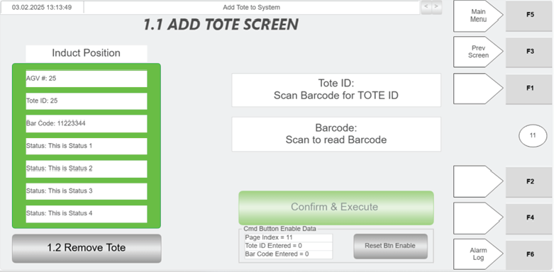
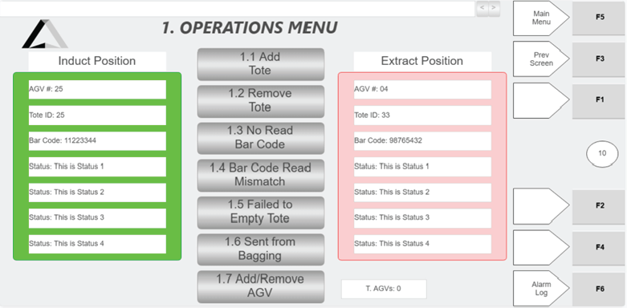
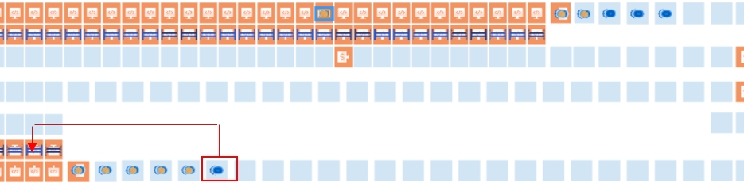

| Procedure ID | proc_recover_an_agv_fault_during_exchange_v1 |
|---|---|
| Title | Recover an AGV Fault During Exchange |
| Procedure Type | recovery |
| Primary Role | L2_support |
| Support Safe | No |
| Validation Status | needs_sme_review |
| Merge Status | source_finalized |
Recover the exchange area after an AGV faults while lifted and leaving the RMS by stopping RMS, removing the faulted AGV through AGV API Controls, conditionally removing the following AGV if it does not back fill, introducing a new tote at the affected location, and placing an empty AGV in the zone.
Use when an AGV faults during exchange while lifted and leaving the RMS, and the exchange area must be restored by removing the affected AGV, restoring tote presence at the location, and placing an empty AGV in the zone.
Responsible role: L2_support
Instruction:
E-stop RMS before attempting to remove the faulted AGV or perform exchange-area recovery actions.
Expected result:
RMS is E-stopped and recovery actions can proceed under the stopped condition referenced by the source.
Screens / Images:

Stop or Escalate If:
Responsible role: L2_support
Instruction:
Remove the lifted AGV that faulted while leaving from the RMS using the AGV API Controls.
Expected result:
The faulted lifted AGV is removed from RMS.
Screens / Images:

Stop or Escalate If:
Responsible role: L2_support
Instruction:
If the AGV behind the faulted AGV does not back fill, remove that AGV also.
Expected result:
If needed, the following AGV is also removed so the exchange area can be restored.
Screens / Images:
Stop or Escalate If:
Responsible role: L2_support
Instruction:
Introduce a new tote at that location.
Expected result:
A new tote is introduced at the affected location.
Screens / Images:


Stop or Escalate If:
Responsible role: L2_support
Instruction:
Place an empty AGV in that zone.
Expected result:
An empty AGV is placed in the affected zone.
Screens / Images:

Stop or Escalate If: